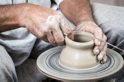
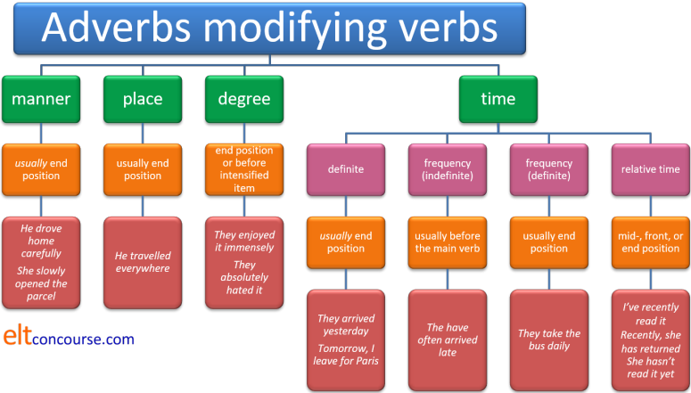

Adverbs

Note: if you have not yet followed the guide to adjectives, some of what follows may be more difficult to understand.
This is quite a long guide as befits the discussion of a major word class so here's a menu of the parts it contains. At any time, clicking on -top- will return you to this menu.
 |
Definitions |
 |
Task: Easy questions: What's an adverb? What sorts of adverbs are there? (Hint: see if you can identify four.) Click here when you have answers. |
Usually people's definitions include something like 'a
word which modifies a verb'. That, as we shall see,
is only half right.
You may have come up with some (or all) of the following
types which in each case are verb modifiers:
- Adverbs of manner, answering the question 'How?'
so we get, e.g.:
He is cycling quickly
She is thinking hard
They are waiting patiently
etc. - Adverbs of place, answering the question 'Where?'
so we get, e.g.:
They are waiting outside
People were walking everywhere
Please sit here
etc. - Adverbs of time, answering the question 'When?' or
'How often?'
so we get, e.g.:
They are enjoying it now
I am going soon
She sometimes arrives late
etc. - Adverbs of degree, answering the question 'How
much?'
so we get, e.g.:
She enjoyed it enormously
They voted overwhelmingly for a change
He hated it intensely
etc.
You may have a slightly different list.
Some would put adverbs of frequency (sometimes, often,
frequently etc.) in their own category, some wouldn't. The
division between adverbs of manner and degree is also slightly
fuzzy. In fact, there are those who would argue that this sort
of categorisation lacks utility in terms of analysis but is useful
as a pedagogic tool only.
It ignores, for example, adverbs which perform different functions
like linking cause and effect (such as hereby) or
expressing the speaker's angle or attitude (such as economically
and theoretically).
Out here in the virtual world there are some other weird (and a few wonderful) classifications of adverbs which include invented and unsustainable categories such as causative adverbs, opinion adverbs and so on. We will not be inventing such things.
All the examples above are single words but adverbs also come as adverb phrases such as far more, from time to time, so very etc. They act as single-word adverbs in many cases but sometimes they have their own characteristics (see below). Some of these are better analysed as prepositional phrase adverbials but they perform parallel communicative functions.
(It
is worth a short aside here to distinguish between an adverb of
manner and an adverb intensifier. Adverbs of manner modify
verbs directly as in, e.g.:
She worked intensely
She thought deeply
She spoke bitterly
and so on.
However, a number of adverbs (including the ones exemplified here)
also act as adverb intensifiers in, e.g.:
It was an intensely painful wound
The idea was deeply misguided
She is bitterly opposed to the thought
Semantically and functionally, we should keep these concepts
separate or we risk confusing our learners unecessarily.
There is a guide to adverbial intensifiers, which are mostly
adverbs, linked in the list of related guides at the end.
 |
What's the difference between an adverbial and an adverb? |
This is where we get a bit technical. All adverbs are adverbials but not all adverbials are adverbs.
Any construction which modifies or describes a verb phrase is an adverbial.
Look at these four sentences
- He often arrived late.
- Mary spoke in German.
- They went on holiday last year.
- I came so that I could help with the cooking.
|
|
Two questions:
|
- Sentence 1
- contains a true adverb – often, which is an adverb of time, specifically, indefinite frequency.
- Sentence 2
- contains a prepositional phrase – in German which tells us something about the verb spoke.
- Sentence 3
- contains a noun phrase – last year which tells us something about the verb went.
- Sentence 4
- contains the subordinate adverbial clause – so that I could help with the cooking which also tells us something about the verb come (in this case, the reason for it).
This is important but in this guide, we are only concerned with adverbs. There is a separate guide to adverbials on this site, linked in the list at the end.
 |
So what's an adverb? |
There are two fundamental sorts:
- adverbs functioning as adverbials (as in Sentence 1, above), for
example,
They left then
He spoke intelligibly - adverbs modifying adjectives and other adverbs, e.g.:
It's an extremely beautiful house
He spoke barely intelligibly
Adverbs can modify other parts of a clause, as we shall see.
|  |
Forming adverbs |
It is often the case that a word can be identified by its form as an adverb because English has only a few ways to form adverbs:
- The most common by far is the addition of -ly to the
adjective form (sometimes with a spelling change):
happy – happily, nasty – nastily, wooden – woodenly, rare – rarely etc.
This is the usual suffix for the formation of an adverb from an adjective in Modern English. Hence carefully from careful and hundreds of others. At one time, it was also the way to make an adjective from a noun (hence motherly from mother). The latter use has been replaced by a simple -y suffix.
It derives, however, from the Anglo-Saxon word lic or lich meaning body. The suffix has been shortened and grammaticalised to the suffix only. - For adjectives ending in -ic, the form is usually -ally
rather than just -ly:
comic – comically, specific – specifically etc. - Rarely, we can add -wards to other adverbs or nouns denote direction of
movement:
north – northwards, down – downwards, earth – earthwards, home – homewards, on – onwards, back – backwards etc. - Even more rarely, we can add -wise or -ways to
denote the manner of something:
crab – crabwise, edge – edgeways, edge – edgewise, coast – coastwise etc. - There is one example of an adverb formed with -long: headlong (and even that is usually an adjective). The adverb sidelong exists but the word is almost always adjectival.
- The suffix -wide also forms a rare set of words which are occasionally used as adverbs: nationwide, countrywide etc. When the suffix is attached to a nation or other state entity, it is usually hyphenated as in Germany-wide, Europe-wide, Japan-wide etc.
Unfortunately, an adverb is sometimes not identifiable from its form
at all and these words simply have to be learned individually because no
reliable form test is available to identify them. Examples include
many short place adverbials such as out, in, inside, over etc. as well
as ones such as seldom, often, outside, soon, home
and hard.
To complicate matters, some words can function in more than one way.
This is a phenomenon known as syntactical homonymy.
For example, in:
- He walked out
the word out is functioning as an adverb (of place or direction) but in:
He walked out the door
the word is functioning as a preposition with a noun-phrase complement (the door) but it is still part of an adverbial phrase.
Prepositions have complements, adverbs do not. - I want to go home
the word home is functioning adverbially, modifying go (or the whole verb phrase, want to go) but in
You have a lovely home
the word is functioning as a noun and is not adverbial in any way (and, incidentally, lovely is an adjective, although it looks like an adverb). - She arrived early
the word early is functioning as an adverb telling us about the verb arrive but in
We had an early breakfast
the word is functioning as an adjective.
As we see above, most adverbs are formed from or have equivalent
adjective forms. A few adverbs, however, notably:
just (meaning recently), quite, so,
soon, too and very
do not have any recognisable adjective forms at all.
 |
Identifying adverbs |
We have see above that form is not a reliable basis on which to base the identification of word class. Adverbs may overwhelmingly be formed by the addition of -ly or -ally to an adjective but there are numerous exceptions and many adjectives look like adverbs because they end in -ly.
Meaning, too, is an unreliable guide because, although it is
fairly straightforward to focus on concepts encoded in words
relating to how a verb is performed, adverbs have numerous other
functions which are more difficult to pin down. We could, for
example, test for an adverb by asking whether the word refers to
manner, place, time or degree and that will often help us to
identify whether something is adverbial or not. It will not,
however, reliably
help us to identify an adverb because, as we saw above the class of
adverbials is much more varied than the class of adverbs.
For example, a word like more is certainly often an adverb
but it does not refer to manner, place, time or degree in the same
way that, for example, words like slowly, there, then and
greatly do.
Equally, in French, over the road, at six and with no
effort refer respectively to manner, place, time and degree yet
none is an adverb.
We are left, as is often the case, with a slot test which relies
on syntax as the defining characteristic. In other words, we
have to look at what the words do in the syntax of the language to
identify their word class.
This means identifying which words can fill certain slots in
clauses. For example, if you attempt to fill the slots in
these clauses with single words, you quickly discover that only one class
of words will do the trick:
She drove the car very __________ out of the garage
It __________ rains in England
She kicked the ball __________ over the wall
She did the work __________ well
It was a(n) __________ beautiful story
Adverbs.
 |
Type a – adverbs as adverbials modifying the verb |
| The sun shone brightly |
When adverbs function as adverbials, modifying a verb or verb phrase, they are of three sorts:
- Adjuncts
- These are the most familiar ones to us because the adverb is integrated
into the sentence. We don't need any more information than the clause
contains to understand them. Some examples:
She waited inside
They told me quickly
She rarely gets here on time
I want to leave now
There are four adjunct adverbs in particular whose function is somewhat different from others. They serve to link cause and effect but do so in a way which makes the utterance perform the act. In other words, they are performative. They are also quite formal, even archaic.
Here are examples of the four most common ones:- You are hereby elected as captain
- The undersigned undertake herewith to transfer the money
- She had studied the area and was thereby able to explain it to me
- She sold the painting and therewith became quite wealthy
See the guide to cause and effect for a little more on this.
- Disjuncts
- These are not integrated into the clause (and are often
separated by commas) and they express the speaker / writer's view of
what is being said / written or they express how the speaker wants
the utterance to be viewed or the speaker's view of the truth or
generalisability of what is said. Some examples:
They are certainly not in
Obviously, he's not coming
Happily, I found my keys
Honestly, I have no idea
Because disjuncts are external to the clause structure and modify everything in the clause rather than a single element of it, they are sometimes called sentence adverbs and there is a guide to them on this site linked in the list of related guides at the end.
Many adverbs which appear as disjuncts are, in other contexts, adverbs of manner (see below).
Compare, for example:
She waited happily, sitting in the sunshine and reading her novel
where happily is an adverb of manner describing how she waited and applicable to the verb wait only
and
Happily, she waited for us and brought us home even though we were so late
where happily is a disjunct applicable to the whole of the rest of the utterance and which expresses the speaker's feeling. - Conjuncts
- These connect two separate and potentially independent clauses (they are, in fact,
cohesive devices and not, as some will call them, discourse markers). Some examples:
If the beer runs out, then I'm going home
He looked everywhere, yet he couldn't find her
I missed my bus. Consequently, I was late to work
Happily, this is not the place to discuss the technical difference between a conjunct and a conjunction but conjunct adverbs get their own section below.
 |
Form, ordering and meanings for Type a |
Word order is sometimes problematic not least because languages differ.
Almost all adverbs
can be fronted for effect or emphasis:
Suddenly, it started to rain
Frequently, he tells lies
Carefully, he opened the box
Lately, I've been having nightmares
Adverbs of degree are not fronted. We do not find,
*Intensely,
he enjoyed the film.
We saw above that adverbs functioning as disjuncts and conjuncts often
appear initially in the clause but ordinary adjuncts can do so, too.
If you want to learn more, there's
a guide to fronting on this
site, linked in the list at the end. What follows applies to non-fronted adverbs.
|
|
Task: Before you go on, stop and decide where in the sentence the following adverbs can appear (apart from at the beginning): When you have done that, click here. |
| carefully | everywhere | slightly | tomorrow |
Try putting the adverbs into sentences such as:
|
| there | eventually | sometimes | intensely | |
| relentlessly | often | rarely | frequently | |
| soon | seldom | from time to time | now and then/again |
- Adverbs of manner (or process adverbs)
Usually, these follow the verb (if there's no object) or follow the object. So we get:
He drove carefully
He drove the car carefully
It is also possible, but rarer, to place these before the verb:
He carefully drove the car into the garage
But this won't work if the verb is used intransitively or with no prepositional or adverbial complement:
*He carefully drove
*She slowly walked
but
He carefully drove the bus out
She slowly walked away
They never come between the verb and the object:
*He drove carefully the car.
The traditional way to analyse these sorts of adverbs is, as we have here, to call them adverbs of manner. They are also called process adverbs because they can only apply to verbs which can be made progressive.
When adverbs such as carefully, slowly, quietly, stealthily, idiotically and so on are used with verbs in a stative meaning, the result is impossible. For example, we allow:
I played quietly
They arrived slowly
and so on, but we cannot have:
*I knew the answer carefully
*She saw the man slowly
*Peter believed she was silly quietly
because those are all stative uses on the verbs. Verbs which are normally stative can be used dynamically, of course and when that happens process adverbs may be used so we allow:
She was thinking carefully
I was considering the idea quietly
etc. - Adverbs of place
These, too, usually follow the object of the verb or the verb itself if there's no object. So we get:
He saw it everywhere
They went there
She came here
It is rare to front these, but possible for emphasis as in, e.g.:
Here she comes!
There they are!
They never come between the verb and the object:
*He saw everywhere friends
The ordering of adverbs of place in clauses generally mirrors the ordering of prepositional phrase adverbials which, for teaching purposes, is convenient because they are performing the same functions. - Adverbs of degree
These also follow the object (if there is one) or come directly after the verb. So we get:
She enjoyed the book slightly
He concentrated intensely
They pursued him relentlessly
These adverbs can be placed before the verb and this has the effect of making them slightly more emphatic. For example:
She greatly enjoyed the party
He completely finished the work
They never come between the verb and the object:
*They pursued relentlessly him
Into this category, we can also put adverb intensifiers (to which there is a separate guide on this site) such as completely, definitely, certainly, slightly, hugely and so on. These are of two sorts:- amplifying and downtoning adverbs which raise or lower the
scale of the verb they modify as in, e.g.:
She totally dismissed the idea
I'm afraid I have slightly scratched the car
etc.
Because these adverbs move the strength of the verb up or down a notch, they cannot be used with ungradable verbs (which are considered on or off events, by their nature having an end point) so we do not allow:
*She completely did her homework
*She slightly made dinner
*Peter somewhat travelled to London
*He wholly arrived
*John thoroughly found his wallet in the kitchen
etc.
but we can have:
She completely destroyed the garden
John thoroughly searched his pockets
Mary partially enjoyed the film
They wholly rejected the idea - emphasising adverbs, by contrast with amplifiers and
downtoners, may be used with almost any verb and serve to stress
it rather than increase or decrease the scale, e.g.:
They definitely arrived late
She has certainly lost her keys
She positively shouted with joy
I absolutely cried my eyes out
etc.
- amplifying and downtoning adverbs which raise or lower the
scale of the verb they modify as in, e.g.:
- Adverbs of time
There are four sorts of these:- Definite time adverbs usually come at the end of the clause. So we get:
I am leaving tomorrow
I want to leave soon
She arrived eventually
These are often fronted for emphasis. For example:
Tomorrow, I have to go shopping
Sooner or later, she'll get the message
In English, the fronted position marks the adverb for emphasis but in some languages, German and Spanish, for example, this is a common or compulsory position for the time adverb and carries no special marking.
Some analyses put words like home and tomorrow into the class of nouns acting adverbially. - Indefinite frequency adverbs
- These usually come before a main verb but after
any auxiliary verb (or the first auxiliary if there are more than
one) and after the verb be. So we get:
She often plays the piano
She has sometimes played the piano
He is frequently stupid
They would seldom have to ask for help
She rarely tells the truth
He will often have been there - These adverbs, however, occur
before semi-modal
auxiliary verbs
She often has to come in early
She is often able to help me
They seldom used to entertain guests
They seldom dare to go - The adverbs often, usually, sometimes and occasionally
frequently occur at the end of clauses:
They work late in the office sometimes
She comes to the house occasionally
He complains about having no money often
Others in this category can occur at the end of clauses but only with some special emphasis. - Multi-word adverb phrases of indefinite frequency do
not follow this rule.
With these the usual word order is to place them after the clause as
we do for other time adverbs. So,
we get:
He comes to my parties from time to time
not
*He comes from time to time to my parties
She only helps me now and then / again
not
*She only now and then / again helps me
There are two exceptions. The compound adverbs scarcely ever and hardly ever operate as single words and follow the same rules as often, seldom, frequently etc. so we get, e.g.:
She scarcely ever helps
The are hardly ever here
and neither can be placed terminally.
- These usually come before a main verb but after
any auxiliary verb (or the first auxiliary if there are more than
one) and after the verb be. So we get:
- Definite frequency adverbs usually
come in end position. For example:
I pay the paper bill monthly
They send electricity bills quarterly
These refer to measurable amounts of time and include, for example:
I get the newspaper daily
She travels to London weekly
We meet annually
The normal position for these adverbs is at the end of a clause, after the verb, its object or any prepositional phrase.
Placing the adverbs anywhere else usually results in non-English or special emphasis.
Apart from annually and seasonally, which are themselves derived from adjectives, these adverbs also functions as adjectives:
a monthly meeting
a yearly trip
a daily news broadcast
etc.
An adverbial phrase, such as once a month / day / year / summer etc. can be used instead of definite frequency adverbs but it is slightly more colloquial and in formal writing the adverb forms are preferred. - Relational time adverbs which connect two
times together. They often come in medial position, before
the main verb but also occur at the beginning and end of
clauses. For example:
She had already left when I arrived
She won't be at home yet
I have recently completed my degree
- Definite time adverbs usually come at the end of the clause. So we get:
 |
Issues with adverbs of frequency and sentence types |
- Two of the positive adverbs, sometimes
and occasionally, do not occur in negative sentences:
We accept:
I sometimes see my sister
Do you occasionally meet your brother in London?
but not:
*I don't sometimes see her
*She does not occasionally meet her brother -
Two adverbs of indefinite frequency have special characteristics:
- generally
is an adverb of indefinite frequency but it is difficult to equate with others in the group because in positive and interrogative sentences, the word means usually but in negatives, it means seldom or rarely. For example:
He generally doesn't come to see me = He rarely comes to see me
She generally complains about the food = She usually complains about the food.
Do you generally eat early? = Do you usually eat early - ever
This is the non-assertive form of never and occurs regularly in questions to elicit a statement of frequency:
Do you ever go to the cinema? Rarely, these days
It can also occur in negative sentences with the sense of never:
She doesn't ever wait for an answer
and is generally in the sense of a complaint.
- generally
 |
Negative-sense adverbs |
Six adverbs are semantically already
negative and are sometimes referred to as negator adverbs. They are: rarely, seldom, barely,
hardly, scarcely
and, of course, never.
Because these words are already negative in sense, they cannot be
negated again in the normal way.
Much more information about these, including some research findings
is available in the guide to negation, linked below.
Here, we will just set out a few examples of the general rules.
- These adverbs do not occur in questions or negative
sentences because their sense is already negative:
We accept:
I hardly ever go to London
She scarcely ever asks for help
We seldom eat before seven
She rarely complains about her work load
They never arrive on time
but not, usually:
*Do you hardly ever go to London?
*I don't scarcely ever see her
*She didn't seldom eat out
*We don't never arrive on time
*Does she rarely eat out?
etc.
(There are some doubtful areas of usage with these negative adverbs which are discussed more fully in the guide to negation, linked below.) - They are used with non-assertive forms (such as any,
ever, yet etc.):
- They rarely ever come to anyone's party
- I seldom went anywhere
- She barely saw anything
- They have hardly had any time to think yet
- She scarcely ever comes late
- She never has any time
- In the initial position, somewhat formally, they require
inversion of the subject and verb (with the do operator in past
simple and present simple forms):
- Rarely does he believe me
- Seldom have I heard such nonsense
- Barely audibly did she speak
- Hardly had I arrived when the phone rang
- Scarcely had she arrived than the fire alarm sounded
- Never have I seen someone make such a mess
- Like the negator never these adverbs can
take a positive question tag:
- They never like anything, do they?
- They scarcely said anything, did they?
- You seldom agree, do you?
- I hardly had time, did I?
- You rarely agree, don't you?
- I hardly had time, didn't I?
- It was barely audible, wasn't it?
- I never had much time, did I?
and we do not allow: - *I never had much time, didn't I?
Here's a summary which hides a good deal of detail but may be
useful to you:

|
|
Type b – adverbs modifying adjectives, adverbs and other parts of a sentence |
| The sun shone increasingly brightly |
|
|
Task: Try putting these adverbs: very unusually enough |
into these sentences: He has a good brain He drove carefully. Click here when you have done that. |
You
probably have:
He has a very good brain
He drove very carefully
He has an unusually good brain
He drove unusually carefully
He has a good enough brain
He drove carefully enough
When adverbs modify an adjective or
an adverb (as many do) the odd-man-out is enough because it
follows rather than precedes the adjective or adverb. We get,
therefore, for example:
The answer is close
enough
I didn't do it carefully
enough
Otherwise, adverbs modify adjectives and other adverbs in
exactly the same way as they modify verbs. We can have, therefore:
That's very
interesting (modifying an adjective)
He opened the parcel
extremely carefully (modifying another adverb)
It is an important characteristic of the
adverb very that it can only modify another adverb or an
adjective. It cannot function as an adjunct and modify a verb
directly. It is not alone in this because other adverbs such as
extremely, utterly, slightly, exceptionally and so on also
function only to modify another adverb or an adjective.
Note, too, the post-modifying position of ever in, e.g.:
We hardly
ever
eat out.
The modifier ever is only used with indefinite frequency time adverbs so
We scarcely ever see him
refers to frequency but
I can scarcely see it
refers to manner and
I can scarcely ever see it
would be an unusual reference to frequency
because:
I can scarcely see it
is the only choice if we are focused on manner.
See also the guide to adverb
modifiers, linked below, which considers intensifiers: amplifiers,
emphasisers and downtoners.
A small class of adverbs is known as viewpoint adverbs because they serve to express the angle or viewpoint from which something is stated. They include the ones exemplified in:
- It was politically unwise to say that at the meeting
- It is ethically indefensible to suggest that
- It is technically feasible for the program to crash
- I am financially embarrassed
- His position is theoretically strong
In these examples, the adverbs are adjuncts because they function only to modify the adjective in each case but they can also function as disjuncts, modifying the entire clause as in, for example:
- Politically, it was unwise to say that at the meeting
- Ethically, it is indefensible to suggest that
- Technically it is feasible for the program to crash
etc.
and for more on that, you should consult the guide to adverbials and the guide to disjuncts, linked at the end.
 |
Modifying adjectives vs. modifying adverbs |
Usually, adverbs which modify adjectives and other adverbs perform one of three functions which can all be described as intensifiers of some kind. Here are examples of the three types but there is a guide to adverb intensifiers on this site, linked below, which provides more detail.
- Intensifier: emphasising
- These adverbs simply make the modified element stronger.
They do not scale the item. For example:
She came really quickly
That was definitely better - Intensifier: amplifying
- These adverbs move the sense of the modified item up a
scale. For example:
That was very well done
The parcel was terribly heavy - Intensifier: downtoning
- These adverbs work in the opposite fashion, weakening the
intensity of the modified item. For example:
That was somewhat carelessly made
I thought he was quite nice
There is, however, an essential difference between those which can modify adjectives and those which modify other adverbs and it is this:
A range of adverbs can modify adjectives and retain their usual meaning but adverbs modifying other adverbs can only be intensifiers of some kind.
So, for example:
- We can have:
She was extremely tall
The figures were very carefully calculated
It was a pretty good party
That was quite surprisingly good
all of which are intensifiers of some kind, modifying either adjectives or other adverbs. - We also allow:
She was quietly confident
The novel was internationally admired
which are not intensifiers but retain their usual meaning when modifying adjectives. - But we do not allow:
*She spoke quietly angrily
*They worked internationally effectively
because adverbs which modify other adverbs are limited to one of the three intensifying functions. In other words, they must be intensifiers of some kind.
This is not a restriction, incidentally, which is parallelled in many other languages so it needs to be taught.
Three other adverbial expressions can pre-modify adverbs and adjectives:
- how
- shows the degree of the item. For example:
How heavily it had rained could be judged from the water in the pots
How heavy the rain had been could be judged from the water in the pots - however
- introduces a dependent adverbial clause. For example:
However angry she is, she shouldn't raise her voice
However hard he works, he gets no credit for it - so ... that
- so is a modifier followed by a that-clause
and means to the extent or degree. When it is fronted, it is followed by the
inversion of the subject and the do / does / did operator or
auxiliary verb. For example:
So carelessly did he drive that everyone was terrified
So fast did the bird fly that it was quickly out of sight
So much has she spent that she is completely broke
But the normal word-order rules apply when it occurs elsewhere in the clause as in:
He drove so carelessly that everyone was terrified
The bird flew so fast that it was quickly out of sight
She has spent so much that she is completely broke
(There is a somewhat rare, literary construction using so + an adverb which does not require the use of the do / does / did operator so we can encounter, for example:
So fast flew the bird that it was quickly out of sight
This formulation cannot, however, usually be used with a pronoun so we cannot allow:
?*So fast flew it that it was quickly out of sight.)
 |
Adverbs modifying other sentence elements |
- Some adverbs can modify prepositions or prepositional phrases.
E.g.:
She's dead against the idea
The bullet went completely through the metal
The wind blew clean through my thin jacket
They are (very) nearly over the worst
It is just next to the post office, directly opposite the station
They live right by the river
Was nearly after dark when they arrived
It was way over my head
The meeting started shortly after 6 o'clock.
The man spoke purely in his own interests.
They acted solely to their own advantage
That's a comment very much out of order here.
We looked all over the town for a replacement.
That is, by the way, virtually a complete list of adverbs that act this way. - A more limited range of adverbs can modify the adverb particles
of phrasal verbs so we allow, for example:
She hit right on the solution
The anaesthetic has worn well off
but this is quite rare and most modification of adverb particles produces malformed language so we cannot allow, e.g.:
*The arrangement feel immediately through
*She gave completely in
*She turned the job straight away down
so the modifier needs to be placed outside the phrasal verb as in:
The arrangement immediately fell through
She gave in completely
She turned the job down straight away - Adverbs may modify determiners, indefinite pronouns and numerals. E.g.:
Almost everyone came back safely
More than 20 people came late
Nearly 600 guests were invited - A few adverbs (such, rather, quite) can pre-modify nouns and
noun phrases. E.g.:
That's quite a job.
It was such idiocy
The kitchen's rather a slum
Some adverbs can also modify a noun directly, acting adjectivally:
An away match
The above paragraph
The then teacher of French
The upstairs bedrooms
The home journey
The backstage party
Syntactical homonymy may be considered here and the alternative analysis is to consider that these words can be adverbs or adjectives depending on their grammatical function. - Many adverbs can post-modify noun phrases and
they are of two sorts:
- Time adverbs:
The party yesterday
The meeting afterwards
The argument beforehand
His sleeplessness overnight
The adverbs daytime, nighttime and overnight can all be used as pre-modifiers but they may better be considered as adjectives when they do that as in:
His daytime thought
Her nighttime worries
My overnight trip - Place adverbs
My journey overseas
His way home
That child there
This customer here
The road ahead
Only a few of these can act either as pre-modifiers or as post-modifiers. They are: upstairs, downstairs, home and above. Non-intuitively, below can only be used as a post-modifier so, e.g.
*the below paragraph
is not allowed but
the paragraph below
the above paragraph
and
the paragraph above
are acceptable.
Again, especially when they pre-modify, some can be considered adjectives so in
an upstairs room
the word upstairs is adjectival rather than adverbial.
- Time adverbs:
 |
Making a distinction: two types of adverbs |
There is another way to classify adverbs on a less structural and more functional basis. There is a guide to circumstances linked in the list of related guides at the end and the analysis is akin to what you will find there.
- Circumstantial adverbs:
Where?
When?
How? - An adverb which answers any of these questions is a
circumstantial adverb. For example:
I stayed there (a place adverb)
He came early (a time adverbial)
He walked fast (a manner adverb)
As you can see, this classification applies to type-a adverbs analysed above.
Circumstantial adverbs generally modify verb phrases. - Additives, Exclusives, and Particularisers:
Including what?
Excluding what?
Focused on what? - These adverbs perform one of three functions:
- As additives, they act to join items
together and signal that they are equally important.
In this way, they often function as conjuncts. For example:- John's ideas are very important. Mary
also has
a good point, I believe.
Here, the adverb also functions to alert the hearer / reader to the fact that both ideas are to be considered on a par and of equal standing - I went to London. I met Mary,
too.
Here, the adverb too signals that both events are of equal importance. There is no sense of subordination. - Mary is both a brilliant cook and a wonderful
dancer.
Here the adverb both plays the same equalising and additive role.
- John's ideas are very important. Mary
also has
a good point, I believe.
- As exclusives, they serve to signal that
some events or states are not to be considered.
These are also called restrictive adverbs because they function to limit what it is we are saying to a particular context. For example:- This meeting is called solely
to consider the future
of the library.
Here, the adverb solely signals that no other discussion is appropriate. - This is just a question of knowing how to work the
machine.
Here, the adverb just signals that no other information is necessary, thus excluding, e.g., guesswork and trial and error. - I am merely at this meeting to take notes and report
back.
Here, the adverb merely excludes any other possible role for attending the meeting. The adverbs simply or only could be substituted with little change to the meaning.
- This meeting is called solely
to consider the future
of the library.
- As particularisers, adverbs can signal the
speaker / writer's focus.
They are often to be found in the initial position for emphasis and are frequently viewpoint adjuncts signalling the angle from which the speaker is working. They can also be disjuncts signalling the speaker's view concerning how a whole statement should be understood. In some analyses, these are called sentence adverbials because their function is to modify the whole clause, not only the verb or verb phrase.
For example:- These birds are mostly
found near fresh water.
Here, the adverb mostly, in contrast to an exclusive such as only, serves to focus on water in particular but also signals that other habitats are possible. - She is generally good at liaising with customers.
Here, the adverb generally signals the fact that there are other possibilities but the focus is on the fact that she is good at liaison.
As a disjunct, the word can signal the limitations the speaker is placing on how one should understand what is said. For example:
Generally, this is a good piece of work with much to recommend it
where the disjunct signals the speaker's wish to be understood as commenting with the restriction that what is said does not apply to the whole piece of work. - Predominately, the course will focus on English for
Academic Purposes.
Here, the adverb predominately serves a similar focusing function without excluding other elements of the course.
- These birds are mostly
found near fresh water.
- As additives, they act to join items
together and signal that they are equally important.
Adverbs as conjuncts |
We saw above that many adverbs can act as linking items,
connecting ideas and making texts cohesive. The discoursal
function of some adverbs is often overlooked if people focus only on
those which modify verb phrases.
Conjuncts usually function anaphorically, linking a clause or
sentence to a preceding clause or sentence.
When adverbs function as conjuncts, they are often preceded by
conjunctions, often but not exclusively, coordinators.
For example:
She missed her train and,
consequently,
couldn't attend the wedding
They lost their keys so, therefore, had to break in
I can drive you to the station but,
alternatively, there's a
bus from the corner
She was a wealthy person although,
additionally, somewhat
mean-spirited
Here are some examples of what they do. For more, see the
guide to conjuncts listed in the list of related guides at the end.
In that guide 11 functions are identified but we'll simplify things
slightly here because, for teaching purposes, some functions can be
handled together and adverbs themselves do not function in all the
categories, some being the domain of prepositional phrases or
clauses.
In the following examples, we have omitted the first clause or
sentence but it can be easily imagined.
- Listing and enumerating:
Secondly, we come to the matter of finance.
Next, we need to consider possible problems - Adding
Additionally, there is the question of who should be invited
Furthermore, he didn't write to thank us. - Summing up
Briefly, this means we will have to start again
Concisely, the problem is twofold - Showing result
Consequently, he became very ill
Accordingly, she attended the meeting in person - Contrasting
Alternatively, you can stay here and I'll go shopping
Otherwise, we'll be too late to get the tickets - Equating
Similarly, she is very determined to go.
Equally, the problem is solvable - Topic switching (or signalling return to a previous topic)
These are sometimes referred to as transitional conjuncts.
Anyway, what have you been doing recently?
Anyhow, how did he do? - Expressing time
Eventually, she agreed
Later, we all went along with the idea
As the examples show, conjunct adverbs are almost always fronted
in the second clause or sentence (as a consequence of their
anaphoric discourse role) but, often quite formally, they can be
inserted in the clause or take the end position, as in, e.g.:
We arrive, finally, at the main item on the agenda
She, consequently, arrived late at the meeting
They saved their money, accordingly
This problem is, equally, quite serious
Error alert |
If the adverb is not separated by commas or by pausing between
separate tone units from the rest of the clause, then some ambiguity
arises. For example:
Her husband was displeased and she ended up similarly unhappy
means that we are comparing her unhappiness with
her husband's displeasure so the adverb is only modifying the adjective,
acting as an adjunct, which is commonly what adverbs do. However,
Her husband became displeased and she ended up, similarly, unhappy
betokens that we are comparing her ending up unhappy with her
husband's becoming displeased and
the adverb is functioning as a conjunct linking the whole second
clause to the first.
Another example may help.
In:
That's what the boss said is vital but this is equally
important
the adverb is modifying only the adjective important and
equating it to vital. However, in:
That's what the boss said is vital but this
is, equally, important
the adverb is linking the whole sentence to a previous one and
implies that the boss saw both things as vital.
Fronting the adverbs removes the danger of ambiguity so the adverbs
in:
Her husband became displeased. Similarly, she ended up unhappy
The boss said that is vital. Equally,
this is important
are only interpretable as conjuncts.
Here's another summary of the other functions of adverbs which, again, hides a good deal of detail.
 |
Adverbs as complements of prepositionsNo, that's a compliment. |
On this site, we avoid, generally, the use of the term
prepositional object, preferring to talk of prepositional
complements so, by our definition, the noun phrase the mainline
railway station is, in:
We arrived at the mainline railway station
the complement of the preposition at.
Some analyses prefer to use the term prepositional object for it
because that is how the noun phrase is acting. So be it.
Adverbs of time and place (only) often act as prepositional
complements, however, and, in that case, cannot sensibly be
described as objects because they are not noun phrases and the
object of anything is normally a noun of some type.
 |
Adverbs of place |
- The place adverbs, here and there,
co-occur with a range of prepositions including: along,
around, down, from, in, near out, over, round, through, under
and up, so we get phrases such as:
along there
from there
out there
through here
up there
etc. - The place adverb home also occurs with a more
limited range of prepositions:
at home
near home
from home
towards home
etc. - The preposition from is particularly productive (or
promiscuous) and can co-occur with a large range of place
adverbs, for example:
from above
from abroad
from outside
from indoors
from within
and many more.
 |
Adverbs of time |
The co-occurrence of prepositions and time adverbs is quite restricted and a good example of the overlap between grammatical and lexical collocation. The picture is:
Adapted from Quirk, et al, 1972:283
To explain this rather complicated diagram:
- The preposition since will take the time adverbs
then, today, and yesterday as
complements but will not collocate with any of the other adverbs
except, slightly arguably, tonight.
We allow, therefore:
He has lived here since then
She has worked on it since yesterday
but we do not allow, for example:
*He lived there since afterwards
*She did it since once
or any of the other adverbial complements.
(Quirk et al include lately and recently as possible complements of the preposition since. Others, including this site, do not find that convincing so assume that, e.g.:
*He has been here since lately
is, in fact, malformed or at least very rare.) - The preposition till/until will take many more
adverb complements (all in the first 4 rectangles on the right).
We allow, therefore:
Until recently, I didn't understand his position
He stayed until this morning
I have driven till now
They didn't meet until afterwards
but we do not allow, for example:
*He'll stay till always
*She did until ever - The prepositions after, before, by and from
are more restricted and only take then, today, yesterday,
now, tomorrow and tonight as their complements.
We allow, therefore:
He lived here after then
She has eaten it before now
It'll be done by then
From then, he was more careful
but we do not allow, for example:
*He lived there before lately
*She did it by afterwards
*He was here after once
or any of the other adverbial complements. - The preposition for is less restricted and takes
all the adverbs except lately and recently as
complements.
We allow, therefore:
It's enough for this morning
He's staying for tonight
I'll keep it for later
We'll treasure it for ever
but we do not allow, for example:
*He lived for recently
Of course, not all the prepositions on the left will collocate naturally with the adverbs on the right, but most will.
In other languages, naturally, the restrictions set out here do
not apply or are different and first-language interference can lead
to errors such as:
*Before recently, I didn't know that
*I will stay until always
*From later we stayed indoors
*Since now he won't arrive
etc.
 |
Negating adverbs |
In English, negation usually begins with the negator and continues to the end
of the clause so what comes before the negator is left in peace.
For example:
He didn't go frequently = He went sometimes
but
He frequently didn't go = He often failed to go
Where the adverb is positioned in a negative sentence is, therefore,
critical to how it is understood.
As we see from this example, there is a word-ordering issue with
some time adverbs when they are negated. The usual position
for adverbs of indefinite frequency such as always, often,
sometimes, occasionally etc. is to place them between any
auxiliary verbs and the main verb so we accept, e.g.:
She has frequently arrived late
I sometimes go to his parties
but reject:
*She has arrived frequently late
*I go sometimes to his parties
However, when the sentence is negated, a different ordering is often
apparent so we accept:
She hasn't frequently arrived late
She didn't frequently arrive late
and we can also accept:
I don't go to his parties sometimes
and probably reject:
*I don't sometimes go to his parties
Above and elsewhere on this site, it is suggested that neither sometimes nor occasionally occur in negative clauses. That is usually true but as we see above, not universally so.
The same consideration applies when the adverb is modifying other
elements. For example:
Not only Mary will be late = Other people will also be late
but
Mary will not only be late = She will also do something else
(such as complain about something)
 |
Comparatives and superlatives of adverbs |
There are exceptions but for most adverbs the rule generally is that we use the
periphrastic constructions with more and most or
less and least to make
the comparative and superlative forms with adverbs, especially those ending in -ly, so we have:
I go more often than I used to not (usually) ?oftener
I go less often than I used to
She was more deeply affected
not *deeplier
Her sister was the least deeply affected
and so on.
For a longer discussion of inflexion vs. periphrastic forms, see the
guide to adjectives.
In very informal (wrong?) uses, we also find adjectives taking the place
of two-syllable (disyllabic) adverbs in clauses such as
?He drove quicker
This
really should be more quickly, of course.
Would you accept any of these?
He spoke slower
He dressed scruffier
She answered happier
Not all adverbs can be modified to form comparatives and
superlatives.
There are, for example, no comparative forms of adverbs of place
*I waited inside but he
stayed more inside
Adverbs of direction can be modified but not with the more/most
construction. Instead the preferred modifier is further
as in, e.g.:
We drove further northwards
They went further inside
but not:
*The went more downwards
*She travelled more westwards
*They went more outside
*She travelled more away
etc.
This is non-intuitive for speakers of many languages which do allow
such modifications and a source of quite persistent, if rare, error.
Not all adverbs of time can be modified so while we can have, for
example:
She frequently works late but
her boss more frequently does so
She came late but I came
even later
because these refer to indefinite frequency and are by definition
gradable.
We cannot, however, make comparatives or superlatives with adverbs of absolute
time as in
She's working tomorrow
John arrived eventually
I have started already
because
*more tomorrow, *more eventually and *more already are
not available.
We can also not make comparatives and superlatives with adverbs of
definite frequency because *more seasonally, *more yearly, *less
daily etc. are not available, either.
Some uncommon adverbs are formed with wise, ward(s) and
ways and these are usually, for semantic reasons,
ungradable. However, the -wards series can be graded
as we saw with further to give, e.g.
He pulled it
further upwards
They continued further homewards
 |
Exceptions |
- Some adverbs retain the same form as the adjective and for these
we use the same rules as the adjectives follow so we have:
He drove fast – She drove faster
He worked hard – She worked harder
She arrived early – He arrived earlier
He spoke too long – She spoke even longer
He came late – She came later
To that list, in informal English, we can add a few very common adjectives which, in the comparative forms can act as adverbs so we hear:
They bought it cheaper than they thought possible
He played the music louder and louder
and, perhaps:
?He just drove quicker - Some adverbs are irregular so we have:
He drove well – She drove better/the best
He drove far – She drove further/farther
He drove badly – She drove worse
(More badly is heard in some varieties of English especially if it is pre-modified with even so we can have:
I played even more badly than I usually do.) - The adverb soon has no adjective form and we get: soon-sooner-soonest.
|
|
Pre-modification |
As is the case with adjectives, comparative and superlative forms
of adverbs may themselves be pre-modified, either to amplify the
sense or tone it down so we find, for example:
He came much sooner than I expected
He did it a lot less carefully than he should
She worked far more carefully after that
He needs to work a damn sight harder
He walked rather carefully on the ice
They came a little later than we hoped
etc.
 |
Two oddities |
There are two adverbs, hardly and scarcely,
which differ in meaning from the adjectives from which it appears they
are derived. Both these are commonly post-modified with another
adverb, ever, only if the sense is habitual.
For example:
We hardly (ever) go to the cinema
I can scarcely (ever) trust him
When the sense is non-habitual but refers to current ability, the
modifier is not permitted:
*My eyesight is poor and I can scarcely ever read this
*We can hardly ever accept this price
These two adverbs have no corresponding comparative and superlative
forms at all so expressions such as:
*We more hardly go there these days
*I can more scarcely understand that
are not available.
Both adverbs are negative in sense and therefore associated with
non-assertive forms of pronouns, determiners and other adverbs so we get, for
example:
We hardly have
any whisky
not
*We hardly have
some whisky
and
I've scarcely started
yet
not
*I've scarcely started
already
 |
Adverbs in multi-word verbs |
Multi-word verbs come in a variety of flavours and shades but one essential way to classify them is to consider whether the particle is an adverb or a preposition. In the first case, they are classifiable as phrasal verbs and the second as prepositional verbs. This matters because the structures of the clauses in which they occur vary considerably depending on the grammatical function of the particle.
There is a good deal more about this in the guide to multi-word verbs,
linked in the list at the end. Here is will suffice to consider
how the adverbs work when paired with a verb. Adverbs, as we know,
modify verbs but prepositions act to link the verb with its object.
So, for example, in
She is looking at the sky
the particle at is a preposition as it usually is and it acts
to link the verb look with the object, the sky.
The preposition does not affect the meaning of the verb look in any way
and we can also have, for example:
She is looking through the window
She is looking towards the door
She is looking under the newspaper
She is looking in the fridge
and so on. Equally, we can change the verb to a close synonym
while keeping the preposition and the meaning remains unchanged so
we can have, e.g.:
She is staring at the sky
She is gazing at the sky
She is peering at the sky
and so on.
However, other particles are more frequently found both as
prepositions and as adverbs with no change in form. For example:
The word up can be a preposition as in, e.g.:
She walked up the stairs
and it can be an adverb, as in:
She woke up the cat
etc.
Other words which can function as both prepositions and adverbs include:
around, down, in, off, on, out, over, round. Another name for
the phenomenon of words sliding between classes is categorical
indeterminacy, by the way.
Briefly, we can apply two tests to work out what role the lexemes are playing and that will help us to define our terms and teach the area consistently and accessibly:
 |
The distinguishing point is that adverbial particles combine with the
verb to make a new meaning but prepositional particles simply link the
verb with its object although the meaning of the verb may be a
metaphorical use such as:
He stuck at his work
They talked around the main issue
etc.
Because the combination of verb + adverb results in a new and often
unpredictable meaning, the item is best learned and produced as a single
lexeme which can often be separated with the object interposed as in,
e.g.:
She looked the word up on the internet.
The test is to see what happens when we change the particle word so, we allow:
She walked down the stairs
She walked through the park
She walked over the bridge
She walked in the village
etc. but, if we change up to anything else in the second example, we get
nonsense:
*She woke down the cat
*She woke through the cat
*She woke over the cat
*She woke in the cat
 |
A second test for whether a word is acting as a preposition or an
adverb is to give it a complement (or object, if you prefer).
Prepositions take complements (or objects), adverbs do not. So,
for example:
She passed by the church on her way
is a case of a preposition, by, taking the complement (or
object) the church to form a prepositional phrase and the
preposition on taking as its complement the noun phrase her
way. We could also have:
She passed in front of my house during her journey
She passed along the riverside on her tour
Here the structure is:
verb + prepositional phrase(s).
However, when we consider:
She passed up the chance
we have up functioning as an adverb, changing the meaning of
the verb pass from go by to deny oneself, because the
structure is:
phrasal verb + direct object
and in this case, the verb is not pass, it is pass up
as can immediately be seen if one replaces the adverb with another:
She passed over her ID card
where the adverb is combining with the verb to make new meanings (surrender
or transfer).
 |
Resisting temptation |
The temptation is, however, to categorise all verbs which are
followed by adverbs as phrasal verbs and encourage learners to commit
them to memory as single concepts. This is mistaken because in
many cases the adverb is simply functioning to modify the verb rather
than combining with it to make a new meaning.
In some sources, then, one finds such expressions as: call back, get
on, get off, go ahead, run after, walk around and a host of others
described as phrasal verbs. They are in fact no such thing; they
are just verbs followed by modifying adverbs and that becomes clear when
we replace the verb with a near synonym or replace the adverb with
another. So we can have, for example:
I called him back
I phoned him back
I texted him back
just as we can have:
I called him later
I phoned him again
I texted him frequently
and so on. The sense of the verb in all cases is unchanged by the
choice of adverb.
A notorious case concerns the expressions get on and get
off (e.g. a bus) which are often described as phrasal
verbs. They aren't really because we can apply the same test and
replace the adverb or the verb so we can have:
She got off
She stepped off
She jumped off
She hopped off
or
She got on
She got in
She got out
She got away
So, asking learners to consider learning these as fixed expressions is
not a good use of their time. A better use is to take the time to
learn the meaning of the adverbs and that is often parallel to the
meaning the word has when it is used as a preposition. It is a
short step from understanding
She took the paper off the table
where off is a preposition, to understanding
She got off near her house
where off is an adverb,
because both refer to movement away from.
It is even asserted (out here on the web but rarely in serious reference
resources) that sit down is a phrasal verb. It isn't of
course, because we can also have:
sit up
sit back
sit forward
sit still
and so on and in all cases the verb retains its simple meaning but
the manner of it is modified by the following adverb.
There is more about this fallacy in the guide to multi-word verbs.
Adjectives masquerading as adverbs |
In many varieties of English, including some British
dialects, it is informally acceptable to use an adjective where a
purist would demand an adverb. We hear and read, therefore,
e.g.:
He ran quick
She explained clear
It burnt bright
She was hurt bad
They looked close
and so on.
Such uses are quite common in AmE (and much bemoaned by some
American writers). In British English, especially in some
dialect forms, uses such as:
We don't speak proper round here
or
Speak nice to your grandma
are also common.
Even in more formal English, some uses of adjectives where an adverb
would be technically required are seen and heard as in, for example:
Come quick!
She arrived as quick as she could
They were hurt quite bad
I looked closer
She copied it near perfect
He was sore afraid
(Historically, the separation of adverbs from adjectives was not rigidly made until well after Shakespeare's time and word classes of all sorts were much more fluid. When people began to attempt to codify the language some recommended a distinction, for example, between the preposition toward and the adverb towards (only the latter survives commonly as a preposition). The recommendation, too, was to make a distinction between the adverb forwards and the adjective forward (and both are now routinely used as adverbs while forward as an adjective is somewhat rare and akin in meaning to impertinent or unashamed)).
 |
Proleptic adjective use |
Purists should not take their insistence on the
adjective-adverb distinction too far. Consider, for example:
Hammer the iron repeatedly
Hammer the iron flat
In the first, we have the normal adverb modifying the verb
hammer, of course, and none would complain about the rightness
of the use. However, in the second, few would suggest that the
word should be flatly as in, for example:
He flatly refused to help
What we have here is an example of a proleptic use of an adjective,
not an adjective masquerading as an adverb at all. Proleptic
means, roughly speaking, anticipatory and proleptic use implies that we are considering the end
effect, not the current action. In other words, the adjective is
modifying the noun iron (as is the proper role of adjectives), not the
verb. Other examples of such uses are:
Play the music loud
Roll the pastry smooth
Pull the rope tight
in which the adjective is being used to modify the music, pastry
and
rope, respectively and not modifying the verb. Compare:
Play the music loudly
Roll the pastry smoothly
Pull the rope tightly
in which the adverb is preferred because it is the verb (manner)
which we wish to modify.
 |
Adjectives which look like (or act like) adverbs |
Some adjectives, it was noted above, look like adverbs and
this betrays their origin. For example, the adjective friendly
looks very much like an adverb with its -ly ending and gives
rise to the awkward expression friendlily as its parallel
adverb.
Originally, the word derives from Old English freondliche, and
the -che inflexion was lost later so the word now functions
only as an adjective having passed through a phase in which it performed
both roles.
The word seemly, for example, has a similar route into modern English and now
the -ly inflexion is routinely used to make adverbs and
the suffix -y to make adjectives.
Here's a short list of adjectives which look like adverbs and cause some awkwardness when we try to form the corresponding adverb. Many will not accept the unattractive forms such as livelily, measlily and so on.
| beastly bodily brambly bristly brotherly bubbly burly chilly comely comradely costly courtly cowardly crackly crawly crinkly crumbly cuddly curly daily dastardly deadly deathly disorderly drizzly early earthly easterly elderly |
fatherly fiddly fortnightly friendly frilly gangly gentlemanly ghastly ghostly giggly girly godly goodly gravelly grisly grizzly heavenly hilly holy homely hourly jolly kindly kingly knobbly leisurely likely lively lonely |
lovely lowly maidenly manly mannerly masterly matronly measly melancholy miserly monthly motherly muscly neighbourly nightly niggardly northerly oily orderly pally pearly pebbly poorly portly prickly priestly princely quarterly queenly |
saintly scaly scholarly seemly shapely shelly shingly sickly silly sisterly slovenly smelly soldierly southerly southerly sparkly spindly sprightly squally squiggly stately steely straggly stubbly surly thistly tickly timely treacly |
ugly unearthly unfriendly ungainly ungentlemanly ungodly unholy unkindly unlikely unlovely unmannerly unmanly unruly unseemly unsightly untimely unworldly weekly westerly wifely wily wobbly womanly woolly worldly wriggly wrinkly writerly yearly |
Many of these words are the result of conventional -y suffixation to form an adjective from a verb or noun with the word from which they are formed happening to end in -l or -le. Nonce words, such as jungly or tangly, may often be formed this way because the -y suffix is still very productive in the formation of adjectives from nouns.
All adjectives referring to definite frequency in this list are also adverbial
so we allow both, e.g.:
We had an hourly meeting
and
We met hourly
The words seasonally and annually do not work
in this way, being confined to adverb status, derived from the
adjectives seasonal and annual.
The adverb early also functions as an adjective so we
can have:
We had an early breakfast
and
We ate breakfast early
The words kindly and unkindly are both adverbs
formed from the adjective kind but also, confusingly,
operate as adjectives so we allow, e.g.:
He spoke kindly / unkindly
and
He was a kindly / unkindly man
Adverbs formed from such adjectives are so unappealing to many
that the preferred adverbial expression will be something like:
in a(n) [adjective]
manner / way. For example:
She spoke to me in a friendly way
not
She spoke to me friendlily
If you would like that list as a PDF document, click here.
A few adjective-adverb forms are identical and the list includes
hard and fast so we find:
It's a fast car
It's a hard job
She drove too fast
They worked very hard
And also:
We need an outside light
We went outside
He's in the upstairs / downstairs study
He walked upstairs / downstairs
etc.
Finally, there are some adjectives which take on adverb-like
characteristics because, semantically, they imply the description of
a verb not a noun. In this list we find:
She's a hard worker (i.e., She works hard)
It's a fast road (i.e., You can drive fast on it)
They are frequent visitors (i.e., They visit
frequently)
I was a heavy smoker (i.e., I smoked heavily)
She's a light sleeper (i.e., She sleeps lightly)
They are occasional customers (i.e., They come
occasionally)
It was heavy rain (i.e., It rained heavily)
She's an attractive writer (i.e., She writes
attractively)
He's a beautiful singer (i.e., He sings
beautifully)
In all these cases, the usual meaning of the adjective does not
apply to the noun phrase, it applies to the way something is done so
the adjectives are really adverbials.
Adverbs in other languages |
All languages have ways to modify verbs and adjectives but how they do it and how recognisably different an adverb is from an adjective is very variable. No list of this kind is likely to get close to being exhaustive but here are some of the most obvious variations.
- suffixation
- English frequently forms adverbs by suffixation, usually with -ly,
as we saw, but there are other possibilities such as -wards.
Many, especially European, languages do the same kind of thing:
Romance languages, such as Spanish, Romanian, French and Italian, often add a suffix like -ment or -mente to the adjective form, from the Latin mentis [mind]. For example, the English adverb comfortably translates as:
cómodamente (Spanish), comodamente (Italian), confortablement (French), confortavelmente (Portuguese) and so on.
Scandinavian languages also use a suffix, -t, to make the adverb from the adjectives but, unfortunately, this sometimes makes it identical to a form of the adjective. For example, comfortable translates as:
bekvämt (Swedish), komfortabelt (Danish and Norwegian).
Japanese, too, has a range of suffixes to denote the change in word class, for example, the addition of /ku/ to the stem so we get:
haya (quick) and hayaku (quickly).
Hungarian works similarly with four possible suffixes.
Standard Arabic also has a suffix to denote an adverb (-an). Other varieties may differ.
Once learners with these backgrounds are alert to the parallel suffixation phenomenon, it is usually reasonably easy for them to form English adverbs naturally. - replacing the suffix
- In some languages, an adjective may be recognisable from its
suffix and in some of these, the suffix denoting an adjective is
removed and replaced by one denoting an adverb.
Greek, for example, replaces an inflexional suffix on an adjective to make it an adverb (usually by inserting -os or -a) so comfortable translates as:
άνετος (ahnetos)
but comfortably translates as
άνετα (ahneta).
In Russian also, and some other Slavic languages, including Latvian, adverbs can be formed by removing the adjectival suffixes from the adjective and replacing it with the adverb suffix (often -o in Russian).
In Korean, adverbs are often formed in a similar way, replacing endings rather than simply adding them.
In these languages, the normal inflexions that the adjectives take to agree with the nouns they modify are dropped when the adverb is formed. - using the adjective forms
- Dutch and German can use the same form as the adjective but make
it operate, invariably, as an adverb. Both the adjective
comfortable and the adverb comfortably then translate
simply as:
bequem (German) and comfortabel (Dutch and Afrikaans).
Turkish, Persian languages (except on words derived from Arabic), Bosnian, Croatian and Slovenian, too, make adjective forms stand equally well as adverbs.
Learners from these language backgrounds may not see the necessity to change the form of an adjective when it is converted into an adverb and that leads to error such as:
*He drove quick
*I sat comfortable - non-inflecting or isolating languages
- The classic example here is the Chinese languages in which a new word is inserted to denote the adverbial use of an attribute and distinguish it from the adjective.
| Related guides | |
| the word-class map | for links to guides to the other major word classes |
| adverbs essentials | for the essentials-only guide in the initial plus section of the site |
| adverbials | for more on adverbials which are not adverbs and distinctions between adjuncts, disjuncts and conjuncts |
| adverbial intensifiers | for a guide to intensifiers: amplifiers, emphasisers, downtoners and approximators (which are mostly adverbs) |
| multi-word verbs | for the guide which distinguishes an adverb from a preposition and much else |
| disjuncts | for a dedicated guide to adverbials acting to modify all the following text (also called sentence adverbials) |
| conjuncts | for a guide to how some adverbs function as cohesive cohesive devices, linking clauses and sentences |
| circumstances | for an alternative functional view of this area |
| fronting | for a discussion of how elements (often adverbs) can be moved out of their normal position for effect |
| prepositional phrases | for more on how these may act as adverbials |
| place adjuncts | which considers both adverbs and prepositional phrases of place only (i.e., position and direction) |
| time adjuncts | which considers the complicated and difficult area of adverbs and prepositional phrases of time |
| assertion and non-assertion | for more on these two concepts and how they apply to adverbs such as yet and already |
| negation | for much more in this area, including inversion after negative adverbs |
| cause and effect | for more on how some adverbs and other adverbials can link cause and effect |
| adjectives | for more on inflexional and periphrastic comparison and proleptic uses |
There is, of course, a test on this.
Reference:
Quirk, R, Greenbaum, S, Leech, G & Svartvik, J, 1972, A Grammar of
Contemporary English,
Harlow: Longman